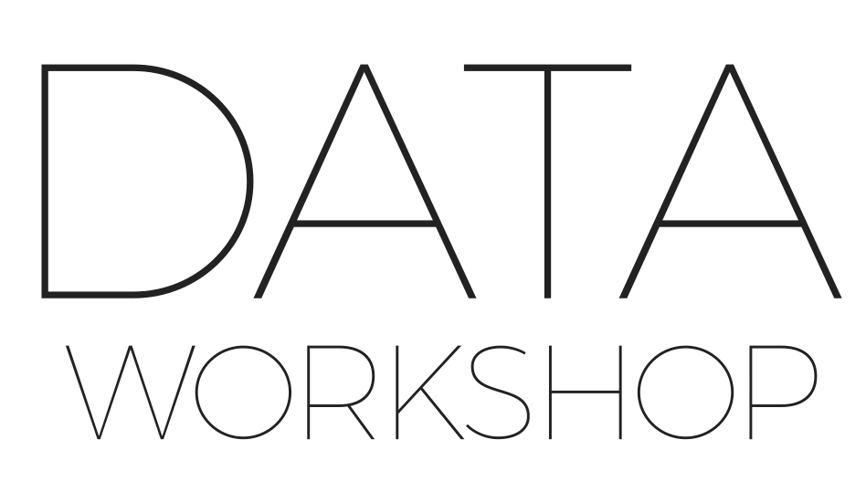
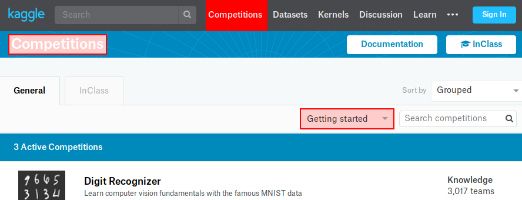

Czym jest Kaggle
jak zacząć i wygrać :)

Paweł Dulak
- programista / PM w Binary Minds
- ColdFusion
- AWS
- Security
- Practical machine learning
Kaggle
- od 2010 roku -> platforma data science
- od 2017 własność Google
Kaggle
- Nauka i trening
- Konkursy
- Kernele
- Społeczność
- Dane
- Portfolio i marka osobista
- Szukanie pracy i szukanie pracowników
- Uruchomienie własnego konkursu
Pierwsze kroki
- rejestracja :)
- prosty konkurs 
Pierwsze kroki - c.d.
Dane
Co dostajemy:
- dane treningowe i testowe
- przykładowy plik z wynikami (nie zawsze)
Analiza danych
- co tak naprawdę dostaliśmy
- czy są jakieś dane nadmiarowe w zbiorze treningowym
Podstawowe rozwiązanie
- wczytanie danych
- wyczyszczenie danych (braki)
- wybór podstawowych cech
- najprostszy model - uczenie modelu
- predykcja za pomocą modelu
- zapis wyników do pliku i wysłanie na Kaggle
Pierwsze rozwiązanie działa, co dalej?
Przede wszystkim analiza danych
- braki - jak uzupełnić?
- typy danych - konwersje?
- rozkład - czy warto stosować logarytm?
- wizualizacja zależności między cechami a zmienną docelową, korelacje
- dane nadmiarowe względem zbioru testowego
Doskonalenie rozwiązania
- CV - cross validation
- sprawdza czy model działa poprawnie
- daje metrykę - czy idziemy do przodu
- automatyzacja testowania nowych pomysłów
- tworzenie, dodawanie cech
- śledzenie postępów
- (szukanie zewnętrznych źródeł danych)
Doskonalenie - c.d.
- badanie ważności cech
- krzywa uczenia
- zmiana parametrów modelu
- zmiana modelu
Postępy
- notowanie metryk z CV i z Kaggle
- wersjonowanie kernela
- śledzenie tablicy wyników
Podsumowanie
- Zrozumienie danych jest ważne
- praca na danych jest bardzo ważna
- poprawianie parametrów modelu lub zmiany modelu mogą pomóc
- ...czy wspomniałem że najważniejsze są dane?
Dziękuję
Pytania?

pawel (at) dulak.pl